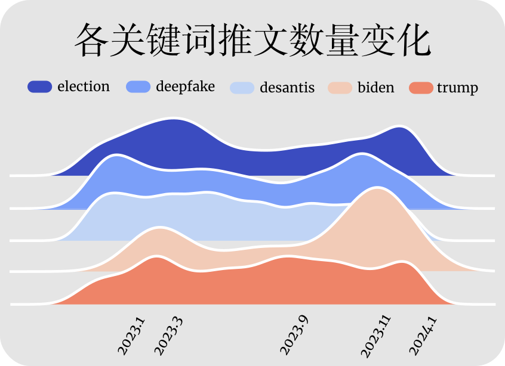
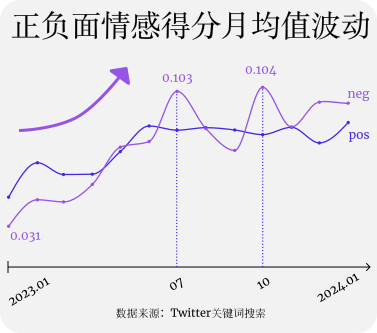
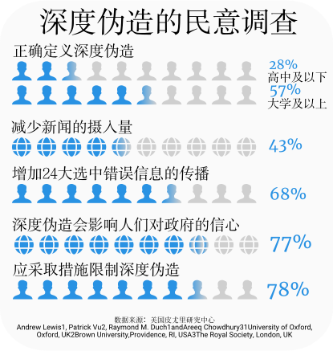
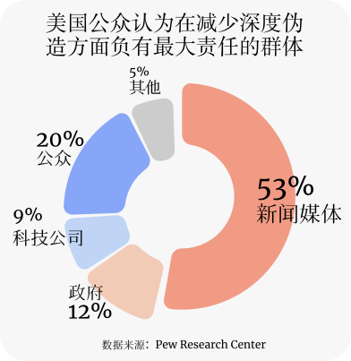

“Man，this AI/Misinformation finna wreck havoc this election season.If only someone had seen this coming......”
今年1月23日的凌晨五点，一位普通美国公民Chris在推特上发送了这样一段文字，随后点赞量增长到83450人。
随着深度伪造的泛滥，公众的讨论量也不断上升。公众是否认为深度伪造会影响大选结果？深度伪造的竞选影响力真的比其他宣传方式大吗？谁应当为深度伪造带来的影响负责？为了探索这些问题的答案，下面将对2023年1月至24年1月期间推特平台上有关深度伪造和选举的共72642条推文进行可视化分析。
通过不同关键词的数量统计，我们发现24年1月23日的bidenrobocall使得与拜登有关的推文在改日大幅增加，每个关键词在23年11月时均出现了增长，我们回溯文本发现大量讨论涉及被AI换脸的娱乐明星，该月受到深度伪造侵害的女性公众人物大量出现，舆情共振引发了对深度伪造和影响选举的热议，“porn”一词在该月出现最多，讨论深度伪造对选举影响的网民会携带明星词条以扩大关注(如下)。

————————— 比如，用户Darshan Rana,mirror now,CNNnews18这样写道🗣️：—————————
在#DeepFake的愤怒中，Meta宣布将采取措施，披露Facebook或Instagram等平台上的社会问题、选举或政治广告何时被“数字创建或修改”，或使用AI@ibhaveshsharma #RajeevChandrasekhar #RashmikaMandanna #KatrinaKaif
#Deepfakes:灯光、相机、骗局!🔴政府是如何应对深度造假威胁的?@ShreyaOpines在#BeyondTheHeadline上问Ajai Garg博士，听听Garg博士是怎么说的!#KatrinaKaif #RashmikaMandanna https://t.co/W1rc62UIbr
“这种深度造假没有被相关人士或社区标记，因此它在网络上传播。难怪，我们的下一代将面临这样的网络地狱🙃#rashmikamandanna #deepfake #病毒#viralreels #安全推特”
公众对deepfake怀着怎样的情绪🧠？
Chris连续使用了“wreck(毁坏)”、“ havoc(严重破坏)”两个情绪色彩极强的单词表达自己的担忧，面对随处可见的“深度伪造将危害民主选举”的新闻标题和相关词条，公众对此的情绪感知是怎样的？我们对包含选举、深度造假等关键词的推特文本进行情感分析得到时间变化图，从而进一步获知舆论情况。
推文的情感分析结果显示，从2023年开始，随着大选年的临近，公众的情感变化越来越激烈，呈现极化趋势，其中负面情绪不断增长直至超过正面情绪。


而据美国Pew研究中心的民意调查，个人对深度伪造的认知水平受到学历高低和关注程度的影响，近一半的调查对象表示会因此减少新闻摄入量来避免接收错误信息，而大部分人都认为深度伪造会增加虚假信息的传播，影响公众对政府的信心，并应采取措施限制深度伪造。
上述公众的负面情绪从何而来☹️？
我们首先对文本进行词频统计，然后通过NRC情绪词典对词云中的单词进行情感分类得到了舆论词云图（如下），
单词颜色代表该单词在情绪词典中得分最高的情绪。可以发现，信任和不信任类的相关情绪词占据百分之五十以上，
其中“信任”、“令人信服的”、“令人失望的”、“信用”、“政策”、“法律”、“政府管理”等词频率最高。而愤怒类的情绪词达到百分之三十，舆论通过“欺诈”、“破环”、“威胁”、“误导”、“惩治”等词表达了对深度伪造的不安情绪。

为进一步呈现舆论主要观点，我们对情绪词云图中的高频词进行词共现处理(如下图)。
与deepfake联系最紧密的单词是
点击🔵分类可选择当前展现的板块
————————— 一名纽约的艺术家LouieCRhymes在twitter上写道✍️：—————————
“Get ready for manipulation of the masses, AI generated ‘evidence’, and the complete inability to trust anything you hear or see on your screen.💔”。
拥有三万粉丝的AI图片创作博主SeekingAnon发起了这样的投票："If you learned that AI was weaponized against the masses to spread propaganda and disinformation in the form of News while dividing people to set them up for self destruction along with stealing a national election.Would you still want “Good” AI if it was introduced?"选举与民主，担忧与武器化、透明性之间的高频线条也显露出舆论担忧深度伪造在政党或利益集团之间斗争中的武器化可能危害民主。
信任情绪词中的信心与忧虑和减弱、社交媒体、政府、川普等词同时出现的频率较高。深度伪造不一定让大部分人相信虚假信息，但却有可能导致了公众对社交媒体或政治人物的信任程度下降。政治传播学者Cristian Vaccari曾提出深度伪造的累积效应可能导致网络信息空间系统性的不确定状态，公众由此放弃在混乱中寻找任何真相，从而使政客能够转移指控。法学教授鲍比·切斯尼将其称为骗子红利（the liar's dividend），政治人物可能会利用深度造假逃避对实际行为的问责。
与措施一词关系最紧密的是政府，舆论希望政府能尽快通过政策减弱深度伪造的危害，发挥管理职能，其次出现的是科技公司，例如OpenAI、Meta等。而PRC民调显示，超过一半的美国人认为新闻媒体在减少深度造假方面负有最大责任，其次是公众、科技公司和政府，该平台的舆论情况与民调结果基本一致(如下图)。

应对深度伪造的集体性努力💡
新闻媒体的内容审核是深度伪造内容到达大众视野的最后一道防线，众多社交平台都做出了尝试。
去年5月，推特扩展了社区笔记功能，允许用户在推特的照片和视频旁添加笔记，以标记被篡改和伪造的图像，旨在利用无偿的众包事实核查来对抗深度伪造的虚假信息。我们对推特社区数据库2021年至2024年的719441条标记进行统计，其中在“图频被AI篡改”的选项中打勾和陈述理由中包含了“AI\选举\深度伪造”的标记在四年内增长了约150倍（如下图）。
众包社区事实核查中的深度造假标签
Community Notes on Twitter·点击🟦分类可选择当前展现的笔记类型
但众包事实核查的方式一直受到质疑，普通用户并不一定具有准确分辨深度伪造图频的能力。推特在众包后甚至裁减了专业内容审核团队，使得深度伪造的平台限制进一步减弱。除此以外，新闻媒体在推特上也不断传播深度伪造的科普信息。我们通过统计发推用户的平台认证信息，发现显示身份信息的用户中媒体占比达到百分之六十二。排在第二的是众多技术公司。
来自各个领域的用户汇聚而成的舆论气泡
气泡大小代表用户发帖数量
通过对特定群体推文的情感极性求平均值，我们发现虽然推文总体上呈现正态分布，中性情绪占比最大；但媒体(可选择Media&News Companey查看)和记者(Journalist)推文的负面情绪较强，极性较高；技术公司(Science&Technology)的情感极性则相对减弱。
不同群体的情感极性分布不同
鼠标悬停可查看该用户发布的具体推文等信息
模拟生成政治深度伪造实验
面对众多的AI生成平台，如果我们输入一条“请帮我生成一张躺在医院里的拜登图片”的提示词，能成功吗？
今年3月，英国反数字仇恨中心CCDH的研究人员通过在各大生成器上使用40 个prompt，并重复 160次来测试各文生图平台的深度伪造情况。这40个提示词围绕美国总统候选人和操纵选举两个主题，还使用常见的“越狱”技术来试图绕过创建误导性图像的任何潜在限制。
各平台生成政治深度伪造的测试结果
鼠标悬停可高亮显示来源类型
结果显示超过一半的指令成功生成了虚假的选举照片，其中Midjourney最有可能生成选举相关的深度伪造图片，而ChatGPT Plus(DALL-E 3)和Microsoft的Image Creator成功地拦截了所有与候选人相关的图像。
根据各生成器官网显示的服务条款，各平台都禁止生成误导性图片，其中除DreamStudio以外的三个平台都申明了不得使用服务为政治竞选活动生成图像，或试图影响选举结果，而ChatGPT则特别禁止生成包括政治人物在内的公众人物图片。今年2月，Midjourney的CEO霍尔茨也在彭博社采访中提议禁止生成拜登和特朗普等人的照片以应对即将到来的美国总统大选。除此以外，OpenAI等公司也致力于研究AI生成内容的水印技术。在政府方面，虽然没有联邦法律禁止深度伪造，但美国有10个州颁布了将其定为刑事犯罪的法规。
FUTURE
以上，我们可以看到各群体为维护民主进程的完整性而做出的集体性努力。正如美国《时代》周刊所说，“需要解决的问题从来不是人工智能，而是虚假信息”。深度伪造对24大选的影响仍不可预估，需要更多的管控力来遏制人工智能的潘多拉魔盒。
注释：
【1】深度伪造信息受众信任行为的影响因素研究 逯前前 天津师范大学
【2】数字外交中的深度伪造研究 对外经济贸易大学国际关系学院教授 董青岭
网页图片：均来源于网络🛜
图表样式：来源于flourish&figma
mianchen.